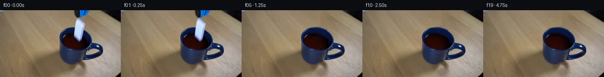

![首帧]()

Round 00
2026-11-05T00:09:03.679595+00:00像素候选变化代码 +300/−0inspection 更新
pixels 0c8e8089e33acdc2 · code 97cdd8d27566ed16
查看本轮 generate.py 真实 diff
--- previous/generate.py
+++ current/generate.py
@@ -0,0 +1,300 @@
+"""Reproducible local-pixel continuation of the supplied photograph."""
+from pathlib import Path
+import json
+import math
+
+import cv2
+import numpy as np
+from PIL import Image, ImageDraw
+from scipy.ndimage import gaussian_filter
+
+from artifact_io import save
+
+ROOT = Path(__file__).resolve().parent
+W, H = 256, 144
+SOURCE = np.array(Image.open(ROOT / 'first_frame.png').convert('RGB'))
+Y, X = np.mgrid[:H, :W].astype(np.float32)
+
+
+def polygon(points, scale=4):
+ image = Image.new('L', (W * scale, H * scale))
+ ImageDraw.Draw(image).polygon([(round(x * scale), round(y * scale)) for x, y in points], fill=255)
+ return np.asarray(image.resize((W, H), Image.Resampling.LANCZOS), dtype=np.float32) / 255
+
+
+DOMINO = polygon([(164, 15), (181, 27), (175, 59), (172, 67),
+ (169, 70), (154, 57), (157, 33), (159, 22)])
+TOOL = polygon([(155, -3), (192, -3), (187, 7), (180, 14),
+ (173, 17), (165, 19), (159, 16), (155, 9)])
+LEFT_JAW = polygon([(155, -3), (170, -3), (171, 8), (168, 15),
+ (165, 18), (160, 16), (157, 11)])
+RIGHT_JAW = np.clip(TOOL - LEFT_JAW, 0, 1)
+
+
+def ellipse_fit(points):
+ (cx, cy), (d1, d2), angle = cv2.fitEllipse(np.array(points, np.float32))
+ if d1 < d2:
+ d1, d2 = d2, d1
+ angle += 90
+ return cx, cy, d1 / 2, d2 / 2, np.deg2rad(angle % 180)
+
+
+OUTER = ellipse_fit([(150, 36.5), (143, 38), (137, 41), (132, 45),
+ (128, 51), (126, 60), (126.5, 70), (131, 78),
+ (143, 85), (160, 87), (173, 85), (186, 80),
+ (193, 73), (194, 63), (191, 54), (185, 47), (180, 43)])
+LIQUID = ellipse_fit([(133, 61), (137, 55), (142, 51.5), (149, 49),
+ (155, 49), (176, 58), (180, 61), (185, 70),
+ (179, 80), (170, 84), (158, 84.5), (144, 80), (132, 69)])
+
+
+def ellipse_uv(x, y, ellipse):
+ cx, cy, rx, ry, theta = ellipse
+ dx, dy = x - cx, y - cy
+ return ((np.cos(theta) * dx + np.sin(theta) * dy) / rx,
+ (-np.sin(theta) * dx + np.cos(theta) * dy) / ry)
+
+
+def upper_edge(x, ellipse):
+ cx, cy, rx, ry, theta = ellipse
+ c, s = np.cos(theta), np.sin(theta)
+ dx = x - cx
+ a = s * s / rx ** 2 + c * c / ry ** 2
+ b = 2 * dx * c * s * (1 / rx ** 2 - 1 / ry ** 2)
+ cc = dx * dx * (c * c / rx ** 2 + s * s / ry ** 2) - 1
+ return cy + (-b - np.sqrt(np.maximum(b * b - 4 * a * cc, 0))) / (2 * a)
+
+
+LU, LV = ellipse_uv(X, Y, LIQUID)
+LR = np.sqrt(LU ** 2 + LV ** 2)
+LIQUID_MASK = np.clip((1 - LR) * 16, 0, 1)
+
+
+def reconstruct_background():
+ """Reveal table, the rear inner wall, and opaque liquid behind the objects."""
+ mask = np.maximum(DOMINO, TOOL)
+ mask8 = (mask > .015).astype(np.uint8) * 255
+ mask8 = cv2.dilate(mask8, np.ones((3, 3), np.uint8))
+ filled = cv2.inpaint(SOURCE, mask8, 4, cv2.INPAINT_TELEA).astype(np.float32)
+
+ # Fit the locally smooth, dark surface using its unoccluded source pixels.
+ xx, yy = (X - 160) / 30, (Y - 68) / 20
+ basis = np.stack([np.ones_like(X), xx, yy, xx * xx, xx * yy, yy * yy,
+ xx ** 3, xx ** 2 * yy, xx * yy ** 2, yy ** 3], axis=-1)
+ valid = (LR < .87) & (mask8 == 0) & (Y > 53) & (SOURCE[:, :, 2] < 16)
+ coefficients = np.linalg.lstsq(basis[valid], SOURCE[valid].astype(float), rcond=None)[0]
+ smooth_liquid = np.clip(basis @ coefficients, 0, 255)
+
… diff truncated; 213 more lines …